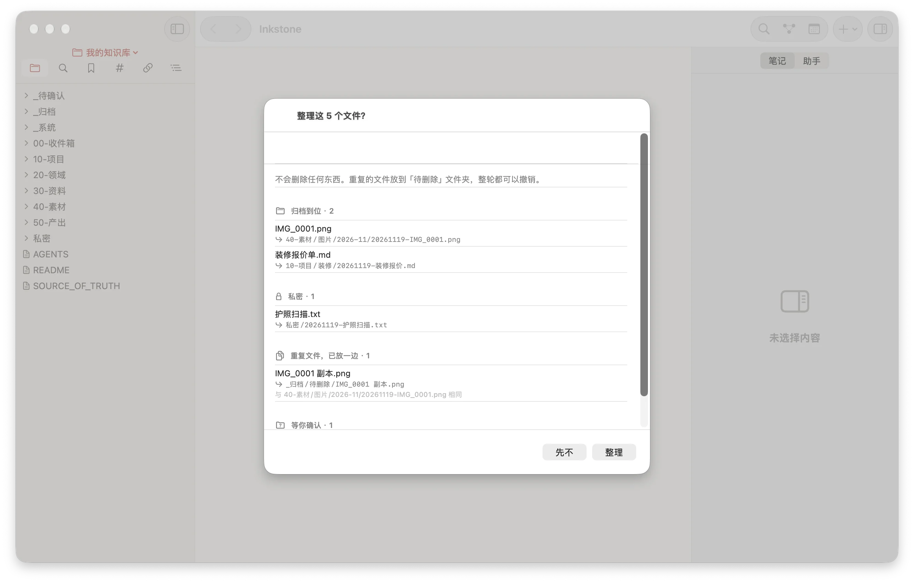
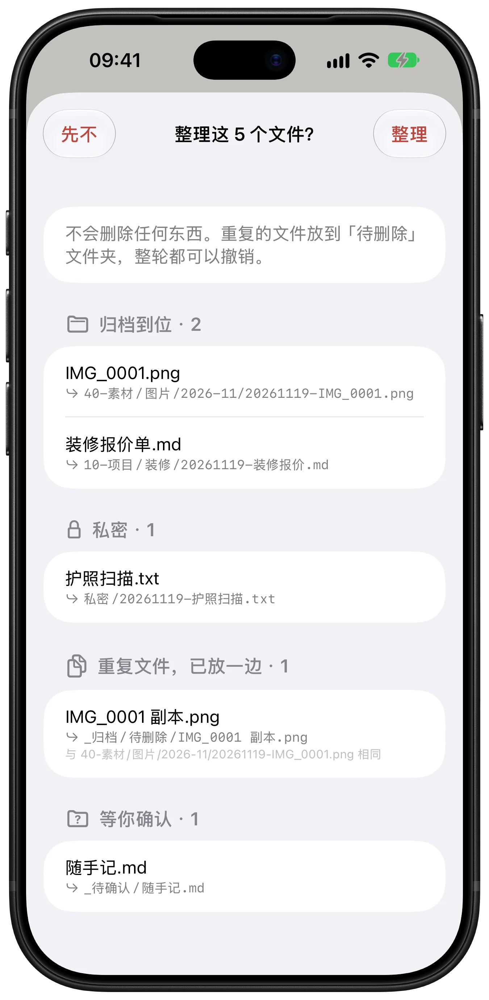
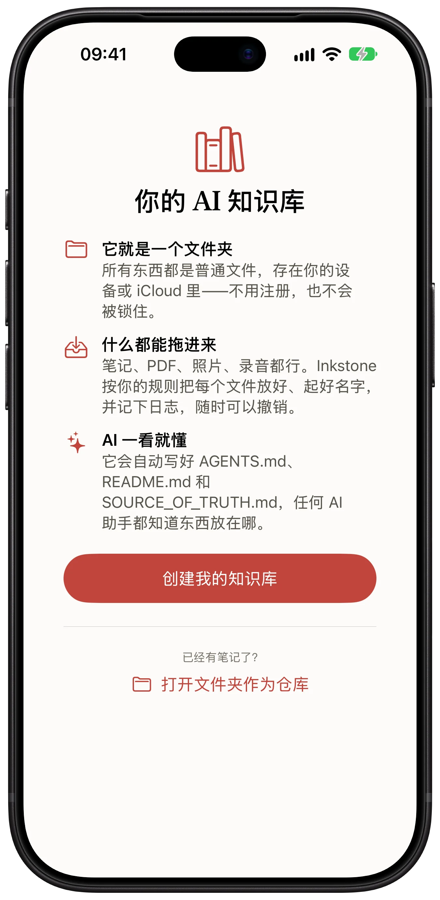
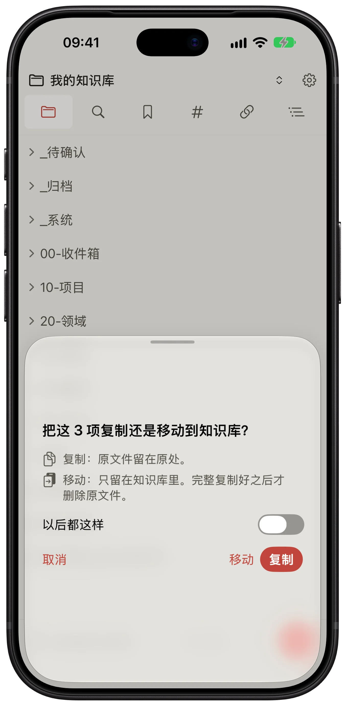
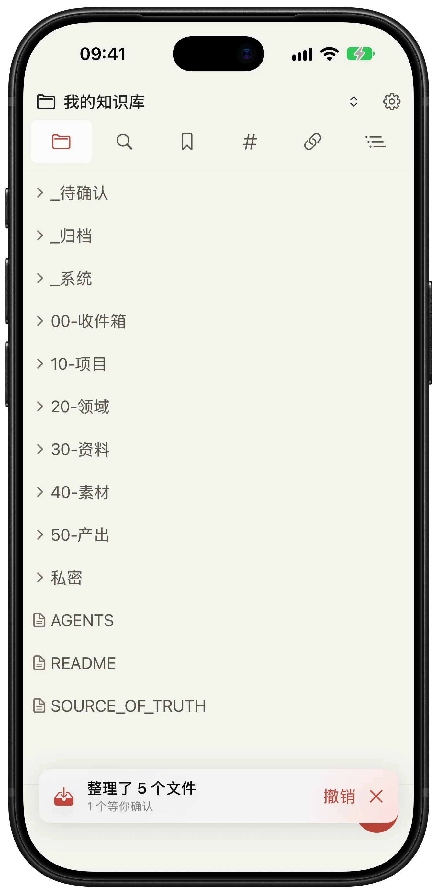
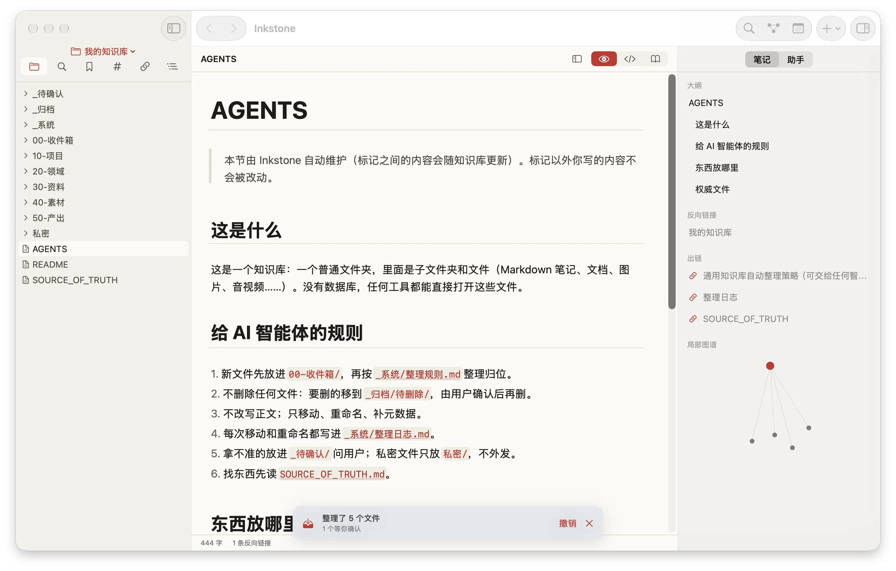
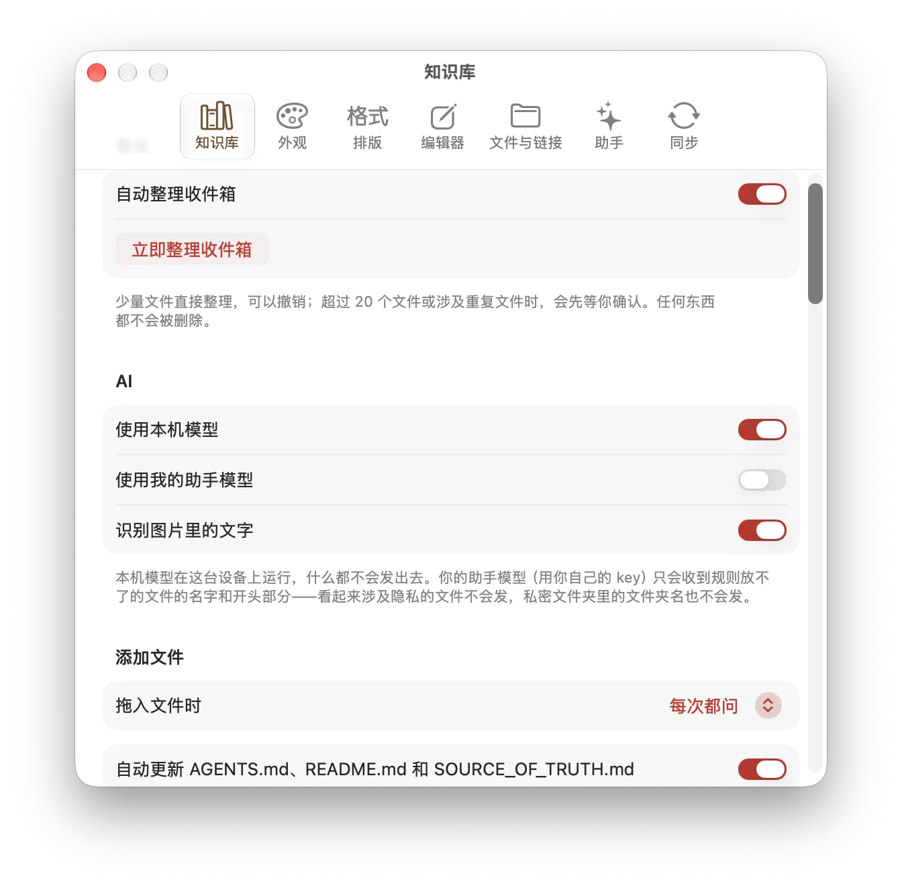
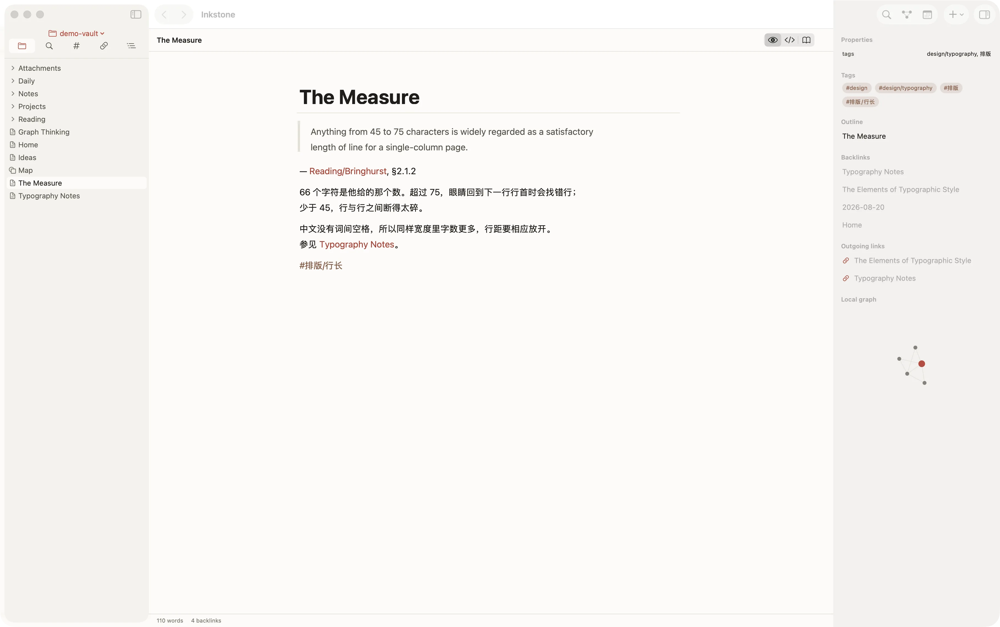
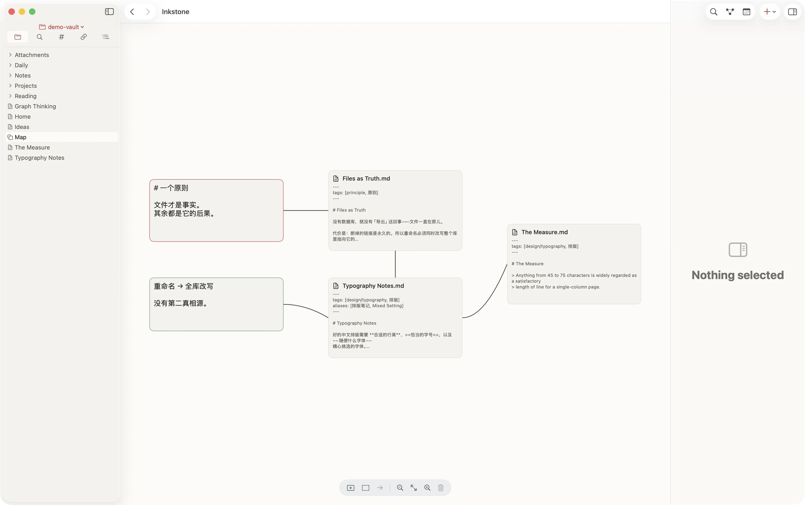

编辑
所见即所得，而不是左右分栏
标题、粗体、引用、callout、待办、表格、代码块都随打随渲染， 只有光标所在的那一行会露出语法。阅读模式是独立的只读视图， 想看没有脚手架的成品时再切过去。正文字体、代码字体和各自的字号分开设置。阅读模式里语法符号是被删掉而不是藏起来的，所以复制一段出来得到的就是干净的正文。

AI 知识库 · Mac · iPhone · iPad
Inkstone 把一个文件夹变成 AI 知识库。笔记、PDF、照片、录音，按你看得懂、改得了的规则自动归档，AI 在你的设备上运行。任何东西都不会删除，每一轮都能撤销。
或者用Homebrew安装
brew install --cask iamzifei/tap/inkstone
免费 · 不用注册 · English · 简体中文 · 繁體中文


不用学怎么设置。起个名字，选个位置，然后往里拖东西。
iCloud 云盘、任意文件夹，或你已有的文件夹。收件箱、项目、领域、资料、素材、产出、私密，文件夹结构和整理规则自动建好。
拖到窗口上，或从「文件」App 添加。第一次会问复制还是移动，默认复制。
看起来涉及隐私的先进私密文件夹，然后按你的规则，再由本机模型判断，按「日期-主题」命名。拿不准的放在「待确认」等你决定。



AI 上下文管理
每个知识库都带三个入口文件，由 Inkstone 自动写好、自动更新。把文件夹交给任何 AI 助手或智能体，它都知道这是什么、东西放在哪、以哪个文件为准。
AGENTS.md — 这是什么，以及 AI 在这里要遵守的规则README.md — 文件夹地图，人和机器都能读SOURCE_OF_TRUTH.md — 什么信息以哪个文件为准只改写 Inkstone 标记之间的部分，你在旁边写的内容原样保留。

整理规则就是知识库里的一个文件。在「设置」里像改笔记一样改，一行一条。除了隐私检查，你的规则排在最前面。
## 我的规则 - 发票 → 20-领域/财务/发票 - 装修 → 10-项目/装修
你的规则下面是默认策略，同样是大白话——可以改，也可以一键恢复。

在支持的设备上，由苹果本机模型判断文件该放哪，什么都不会发出去。
默认关闭。用你自己的 key 时，只发送规则放不了的文件的名字和开头，以及你的文件夹名和规则；看起来涉及隐私的绝不发送。
不用注册，没有数据收集，我们没有服务器。知识库就是一个普通文件夹，用什么都能打开。
所有内容都是普通 Markdown。其他 Markdown 应用的仓库可以直接打开——而且永远不会被重新整理。
编辑
标题、粗体、引用、callout、待办、表格、代码块都随打随渲染， 只有光标所在的那一行会露出语法。阅读模式是独立的只读视图， 想看没有脚手架的成品时再切过去。正文字体、代码字体和各自的字号分开设置。阅读模式里语法符号是被删掉而不是藏起来的，所以复制一段出来得到的就是干净的正文。
链接
[[笔记]]、[[笔记#标题]]、[[笔记^块]]、![[嵌入]]，以及在frontmatter里声明的别名，全部汇进同一个索引。每篇笔记都会显示谁指向它、它指向谁， 以及它的哪些链接还没有落点。

看清形状
力导向模拟是确定性的，所以同一个库每次都画出同一张图。 你可以记住它的布局，而不是每次打开都重新辨认一遍。局部图谱只看一篇笔记和它的邻居。

空间化的笔记
卡片、文件和连线摆在一张无限大的纸上，存成JSON Canvas 1.0—— 和这个格式的其他实现读写的是同一个文件。你的白板和你的笔记一样可以带走。

找东西
一个快捷键唤起覆盖全库的模糊切换器。全文搜索认识tag: 和path:； 标签写在行内或frontmatter里都行，支持多级嵌套，也不挑文种—— #项目/进行中和 #project/active建索引的方式完全一样。近万篇的库上也不会卡——搜索跑在主线程之外，打字不用等磁盘。

两台机器
走iCloud同步，或者把整个库推到一个GitHub仓库。开始同步之后，冲突时不会覆盖任何内容：两边都改过的笔记，另一份会作为冲突副本留在你的版本旁边。按文件类型的开关决定附件和多媒体要不要跟着走， 库自己的 .gitignore会被尊重。

合上时，就是熟悉的 iPhone 版。展开后，侧栏和笔记并排。半开时，笔记在折痕一侧，反向链接、大纲和属性在另一侧——没有任何内容横跨折痕。
一个装着你的笔记和文件的文件夹，整理得让你和 AI 都找得到东西，并附有告诉 AI 东西放在哪的入口文件。在 Inkstone 里它始终是普通文件夹。
给 AI 助手正确的文件和使用规则。AGENTS.md 和 SOURCE_OF_TRUTH.md 就是为任何智能体做这件事的。
能。作为仓库打开时保持原样，只有 Inkstone 建的或领养的知识库才会被自动整理。
macOS 26 的 Mac，iOS 26 的 iPhone 和 iPad。本机模型需要支持 Apple 智能的设备；不支持时按你的规则整理。
免费，Mac 版和 App Store 版都是。
在你下载任何东西之前，值得先知道的部分。
| 知识库 | 收件箱、项目、领域、资料、素材、产出、私密、待确认、归档——并自动维护 AGENTS.md、README.md、SOURCE_OF_TRUTH.md |
|---|---|
| 自动整理 | 先过隐私检查，再按你的规则，再用苹果本机模型（或你自己的模型，默认关闭）。有日志、能撤销、不删除 |
| 平台 | macOS 26与iOS 26，一套SwiftUI代码。Mac版是通用应用，Apple芯片与Intel都能用 |
| 存储 | 你自己选的文件夹里的纯Markdown文件。没有数据库，不需要导入 |
| 兼容性 | Obsidian库原样打开，双向都行。白板是JSON Canvas 1.0 |
| Markdown | GitHub Flavored Markdown，另加双链、嵌入、块引用、callout、脚注、数学公式与Mermaid |
| 同步 | iCloud或GitHub仓库，可按文件类型过滤 |
| 工作流 | 与Obsidian相同占位符的模板、导出为PDF或HTML、命令面板、在聚焦搜索中找到笔记、快捷指令操作 |
| 界面语言 | English、简体中文、繁體中文 |
| 源码 | 在GitHub上公开。尚未选定许可证。 |
| 隐私 | 不需要账号，没有遥测，不会发起你没要求过的网络请求 |
它免费，不向你隐瞒任何东西，建出来的知识库就是一个本来就属于你的文件夹。
或者用Homebrew安装
brew install --cask iamzifei/tap/inkstone